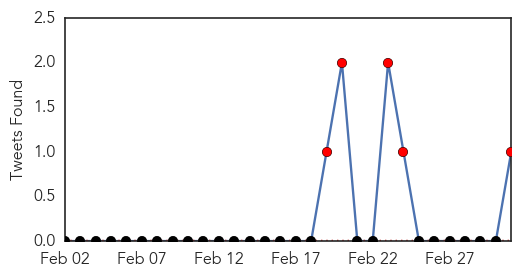
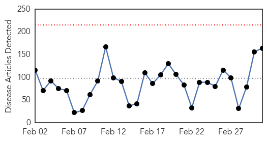
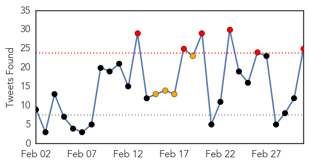

Cholera
30-Day Web Trend
0 alerts, 0 warnings

30-Day Twitter Trend
5 alerts, 0 warnings

Article Locations

Article Confidences

Top Articles:
- 0.996
- WHO intensifies support to cholera outbreak in Malawi and Mozambique
- 0.996
- WHO intensifies support to cholera outbreak in Malawi and Mozambique - Malawi
- 0.996
- WHO intensifies support to cholera outbreak in Malawi and Mozambique
- 0.996
- Mozambique cholera death toll rises to 41
- 0.980
- Southern Africa Weekly Report Map, 24th February to 2nd March 2015 - Malawi
- 0.976
- Cholera fears as two kids quarantined
- 0.966
- Cholera fears as Zimbabwe health authorities quarantine two children
- 0.926
- Malawi: WHO intensifies support to cholera outbreak in Malawi and Mozambique
Top Tweets:
- 0.531
- RT: WHO intensifies support to cholera outbreak in Malawi & Mozambique Health http://t.co/gcyx2fkZGw
Ebola
30-Day Web Trend
0 alerts, 0 warnings

30-Day Twitter Trend
6 alerts, 4 warnings

Article Locations

Article Confidences
Top Articles:
- 1.000
- Ebola Cases Falling in West Africa
- 0.999
- Guinea says Ebola patients sent home after botched blood tests
- 0.999
- Exclusive: Guinea says Ebola patients sent home after botched blood tests
- 0.999
- Guinea says Ebola patients sent home after botched blood tests
- 0.999
- By the numbers: Ebola makes a comeback in Sierra Leone
- 0.999
- Exclusive: Guinea says Ebola patients sent home after botched blood tests
- 0.999
- Traditional healers to help fight Ebola
- 0.999
- U.S., Liberia start formal test of ZMapp Ebola virus drug
- 0.999
- Guinea says Ebola patients sent home after botched blood tests
- 0.999
- International Conference Aims to Wipe Out Ebola
- 0.999
- Ebola Survivors Face Stigma and Harsh Punishment for Having Sex in Sierra Leone, by Kayla Ruble
- 0.999
- Deadly Ebola: Sierra Leone Get $80M Cash Boost To Fight Ebola
- 0.999
- Exclusive: Guinea says Ebola patients sent home after botched blood tests
- 0.998
- Almost Eliminated, Ebola Is Coming Back in Sierra Leone
- 0.998
- Ebola czar — "This thing isn't over yet." And the next pandemic could be even worse.
- 0.998
- W. African Nations Hit by Ebola Seek More Aid From EU
- 0.998
- MFA of Latvia
- 0.998
- Massachusetts Nurses Association says Nina Pham Ebola suit against Dallas employer holds hospital industry 'accountable'
- 0.998
- Fight against Ebola epidemic must continue, Sherlock warns
- 0.998
- W. African Nations Hit by Ebola Seek More Aid From EU
- 0.998
- UN hails China's 'tremendous' help in battling Ebola - Headlines, features, photo and videos from ecns.cn
- 0.998
- Ebola: Liberia's Johnson Sirleaf urges 'Marshall Plan'
- 0.998
- W. African Nations Hit by Ebola Seek More Aid From EU
- 0.998
- Your Ebola questions
- 0.998
- Ebola Virus Disease: One year on
- 0.997
- Ebola’s mental-health wounds linger in Africa : Nature News & Comment
- 0.997
- The Struggle Against Ebola Continues Despite Reported Decline
- 0.997
- North Korea Eases Ebola Travel Restrictions
- 0.997
- European Commission Directorate General for Deve
- 0.996
- North Korea Eases Ebola Travel Restrictions
- 0.996
- Liberia, Guinea laud progress in fight against Ebola -
- 0.996
- Interview: Sierra Leone thanks China for aid in fighting Ebola: FM
- 0.996
- Andriukaitis: Ebola highlights Africa's health challenges
- 0.996
- MOHS Collaborates with IRC and Partners to Build Capacity on Infection Prevention Control
- 0.995
- 'Ebola nurse' Nina Pham sues Texas hospital
- 0.995
- S Leone to get $80m for Ebola fight
- 0.995
- From emergency to recovery: EU mobilises efforts to end Ebola and alleviate its impact
- 0.994
- Ebola epidemic is 'wake-up call' for investment in universal healthcare
- 0.994
- Nina Pham, Texas Nurse Who Contracted Ebola, Sues Hospital
- 0.992
- North Platte Nebraska's favorite newspaper
- 0.992
- North Korea Ends Ebola-Related Travel Restrictions
- 0.991
- End in sight for Ebola outbreak but ‘lost decade’ looms for west Africa
- 0.991
- Almost 30 countries vulnerable to a new Ebola-style epidemic jeopardising the future of millions of children
- 0.991
- EU mobilises efforts to end Ebola and alleviate its impact
- 0.991
- Latest News & In-depth Coverage on Kashmir Conflict
- 0.991
- Nurse who survived Ebola after contracting virus sues Dallas hospital - National
- 0.989
- African leaders urge Ebola 'Marshall Plan'
- 0.989
- African leaders urge 'Marshall Plan' for Ebola recovery
- 0.987
- Nurse Who Contracted Ebola in the U.S. Sues Her Hospital Employer
- 0.987
- IMF sending $80m to Sierra Leone
Showing top 50 articles...
Top Tweets:
- 0.914
- President of SierraLeone: Victory over the virus is in sight but only we can reduce the number of Ebola cases to zero. EbolaResponse
- 0.910
- Dr Chan: 2014 demonstrated the world’s vulnerability to emerging & reemerging infections Ebola EbolaResponse
- 0.858
- Vice President of Sierra Leone Places Self Under Ebola Quarantine as Cases Rise - Breitbart News http://t.co/W1aY4lcPGl ebola EVD
- 0.851
- Ebola outbreak: Sierra Leone gets $80m IMF cash boost - BBC News http://t.co/UnXAH4koTX ebola EVD
- 0.763
- Texas nurse who contracted Ebola sues hospital company - CNN http://t.co/ucv7d42j7w ebola EVD
- 0.763
- Liberia has gone 10 days with no new laboratory confirmed cases of Ebola. We must remain vigilant. EbolaResponse
- 0.754
- Let us redouble our efforts to help people of the affected nations end this Ebola outbreak now says. Ebolaresponse
- 0.714
- Exclusive: Guinea says Ebola patients sent home after botched blood tests - Reuters http://t.co/ybWfbe3KUK ebola EVD
- 0.714
- Exclusive: Guinea says Ebola patients sent home after botched blood tests - Reuters http://t.co/u4TT1pmbFW ebola EVD
- 0.714
- Exclusive: Guinea says Ebola patients sent home after botched blood tests - Reuters http://t.co/V6mATwJ62K ebola EVD
- 0.695
- Dr Chan: In today's world there is no such thing as a local outbreak it can quickly become a regional & global threat Ebola EbolaResponse
- 0.694
- Dr Chan: Ebola outbreak revealed major gaps in capacity & coordination among multiple agencies & dev partners at national & intl levels
- 0.691
- Nurse who survived Ebola sues Dallas hospital system - Mid Columbia Tri City Herald http://t.co/Gq7wAbwpiC ebola EVD
- 0.666
- Pham Ebola Lawsuit Could Be Landmark For Patient Safety - Forbes http://t.co/bOMslcDo56 ebola EVD
- 0.657
- North Korea Lifts Ebola Travel Restrictions - ABC News http://t.co/5eXOYxTm1R ebola EVD
- 0.656
- RT: Dr Wren-US Kamara-Sierra Leone Sherman -Liberia present Ebola & Surgery globalsurgery http://t.co/VHLr…
- 0.628
- Isolation can take emotional toll on volunteers at risk of Ebola - Los Angeles Times http://t.co/GNnBlpcFHc ebola EVD
- 0.605
- Nurse Who Contracted Ebola in the US Sues Her Hospital Employer - New York Times http://t.co/vMB4o2Azo4 ebola EVD
- 0.596
- RT: Live Ebola Q&A with's Bruce Aylward & @UN's at 0800 GMT.Send you questons to BBCEbola
- 0.589
- RT: RT: Ebola in Sierra Leone: No end to epidemic anytime soon. Social factors will determine if it ends htt…
- 0.582
- Most Surprising Allegations in Ebola Nurse Nina Pham's Lawsuit - ABC News http://t.co/PTMqIp50Zo ebola EVD
- 0.559
- Ebola: Liberia's Johnson Sirleaf urges 'Marshall Plan' - BBC News http://t.co/7zGXDYEp4H ebola EVD
- 0.555
- Dr Chan: Three Ebola vaccines trials are underway. We need more research to find whether the vaccines are efficacious EbolaResponse
- 0.543
- RT: Sirleaf: "Liberia's post-ebola recovery must prioritise revitalising healthcare delivery"
- 0.528
- Liberia Ebola doctor: 'We're going to win very soon' - BBC News http://t.co/FmGqFgCWpM ebola EVD